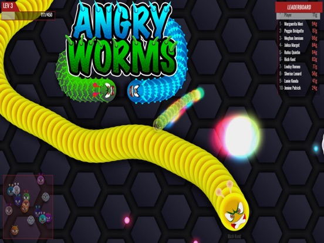
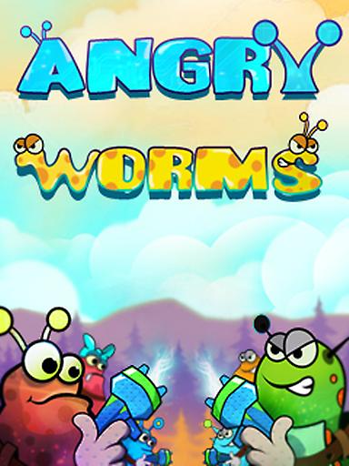
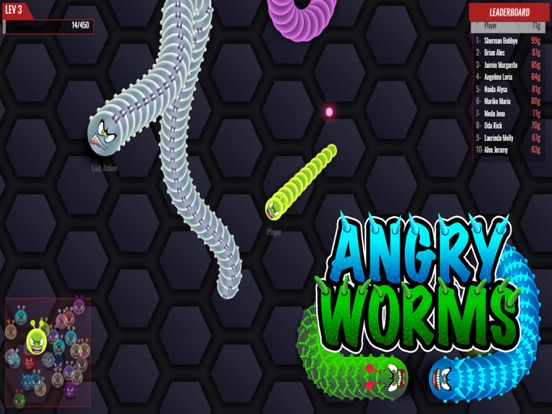

Angry Worms.io throws you into a writhing mass of worms all fighting to become the biggest crawler in the arena. Think Slither.io but with an angrier attitude. I've been playing this one for weeks now, and let me tell you—it's way more tactical than it looks. This guide covers everything from basic controls to the sneaky tricks that'll make you a top 10 regular.
🎯 Game Overview

What Is Angry Worms.io?
Angry Worms.io is a browser-based .io game where you control a colorful worm slithering around a crowded arena. The whole game revolves around eating glowing dots to grow longer while making other worms crash into your body. Sounds familiar? Yeah, it's basically Slither.io with a more aggressive vibe. But don't let that fool you—the strategies that work here are surprisingly different.
Why Play Angry Worms?
Here's the thing: this game has some cool features that set it apart. You've got multiple map sizes to choose from, tons of unlockable skins, and the gameplay just feels snappier than some of the older snake games. Plus, the community is pretty active, which means you're never waiting long for a match.
The Growth System
Your worm starts tiny, and everything on the map is food in some way. Here's what you'll encounter:
- Glowing dots - The main food source. They're everywhere and your bread and butter for steady growth.
- Other worms - Run into their body and they're toast. They'll explode into a pile of glowing dots you can vacuum up.
- Power-ups - Occasionally you'll spot special items that give temporary advantages.
Game Modes
Angry Worms keeps things interesting with different objective types. The core gameplay stays the same—grow big, don't die—but the maps change things up enough that you can't just rely on muscle memory.
🎮 Controls & Mechanics

Mouse Movement
Your worm follows your cursor. Point anywhere and your worm slides toward that spot. The farther your cursor is from your worm, the faster you move. This is huge for understanding speed control—big worms that extend across half the screen can still be maneuvered, but you've got less room for error.
Speed Boost
Left-click gives you a quick burst of speed. Unlike some games where boosting is free, here it costs you nothing except positioning. You boost, you go faster, that's it. Use it to escape predators, catch prey, or make sudden direction changes. I've found that mixing boost and regular movement keeps opponents guessing.
The Collision Rule
This is where it gets interesting. Other worms die if they touch ANY part of your body. But here's the catch: you're also vulnerable. Run into someone else's body and you're the one exploding into food. So circling around to trap people works both ways—you've got to be careful about your own tail position.
Long worms are powerful but vulnerable. Your own tail can betray you if you're not careful. Big players often die from their own body length, not from opponents.
🌱 Beginner Strategies

1. Don't Chase—Lure Instead
New players make the same mistake: they chase smaller worms thinking they'll catch up. But here's what actually happens—you cut off their escape, they panic, and they end up behind you. Then YOU crash into THEM. So yeah, sometimes the best hunting strategy is to look vulnerable and let them come to you.
2. Stay Mobile
I know it feels safe to coil up in a corner, but that's basically asking someone to circle you. The moment you stop moving is the moment you become predictable. Even when you're building up size, keep making small movements. Stay hard to predict.
3. Eat the Dots First
Before you go hunting, get some baseline size from the scattered glowing dots. Most of them are just sitting there, free food. Why risk a confrontation when you can grow safely first? I'd say get to at least 100 length before you start actively hunting other worms.
4. Map Awareness From Day One
Check the minimap. I mean it. Get in this habit early. You'll see where the big worms are, spot safe corridors, and notice when someone's hunting you. The minimap is basically your survival radar.
⚡ Intermediate Tactics

1. The Circle Trap
This one's classic but effective. Start making a wide circle around a cluster of dots or a small worm. Tighten the circle gradually. The dots (or the worm) end up trapped inside your loop. When the prey has nowhere to escape, they either run into your body or you close the gap and swallow them. Works every time against impatient players.
2. Use the Edges
Map edges are your best friend. When you're being chased, head toward the edge—the bigger player might try to cut you off, but if they mess up even slightly, they crash. Just don't get pinned yourself. The edge is a weapon, but it's double-edged.
3. Speed Variation
Instead of constant speed, vary it. Speed up, slow down, speed up again. This makes you unpredictable and hard to aim at. Plus, it saves you from getting caught in predictable patterns that skilled players can exploit.
4. Target the Overconfident
Big worms think they're invincible. They're not. Watch for players who are aggressive and taking risks. They'll eventually bite off more than they can chew. Let them chase you into a tight spot, then watch them crash into your body. Sometimes the best way to beat a big worm is patience.
🚀 Advanced Techniques
1. The Coil Defense
When a much bigger worm is chasing you, start making tight circles. You become a spiral that they can't easily penetrate. The bigger they are, the harder it is for them to navigate your coil. Eventually they'll either give up or crash. This works especially well in tight spaces.
2. Controlled Collapse
Some advanced players deliberately shorten themselves to become more maneuverable. You heard me right—crash into your own tail on purpose, shed some length, and suddenly you're a tiny fast worm that can slip through gaps. Then you rebuild from all the dots you grab while the big guys are still trying to turn around.
3. The Ambush
Position yourself near a dot cluster that someone's heading toward. Don't move. Let them come into your zone. The moment they commit to eating, make your move. They can't change direction fast enough. Ambushes from near corners or behind obstacles work really well.
4. Predatory Patience
Sometimes you just wait. Watch the leaderboard for when a top player suddenly disappears—they got killed. The worm that killed them just got huge AND is probably cocky. Wait for them to overextend, then strike. Taking out the top player is the fastest way to jump to #1.

💎 Pro Tips
Master the boost timing. Boost too early and you waste it. Boost too late and you're already dead. The sweet spot is when an opponent commits to a path they can't change—then boost perpendicularly. They crash, you feast.
Play during off-peak hours. Less crowded servers mean easier leaderboard climbs. You'll run into fewer coordinated predators and more prey that makes rookie mistakes.
Don't ignore tiny worms. They add up. A dozen small worms equals serious mass. Plus, tiny worms often make tiny mistakes—you can trap them almost at will.
Unlock skins strategically. Some skins have subtle visual advantages—patterns that make your body length harder to judge, or colors that blend better with certain map themes. Experiment to find your favorites.

❓ Frequently Asked Questions
How do I kill other worms in Angry Worms.io?
Make them crash into your body. That's it. Position yourself so their head hits your body, not the other way around. The easiest way to do this is to bait them into chasing you, then cut them off or suddenly reverse direction.
Does boosting cost anything?
Nope, unlike some games, boosting in Angry Worms is free. You just go faster temporarily. So use it liberally—there's no penalty except that you might lose positioning if you boost in the wrong direction.
What's the best starting strategy?
Grab nearby dots immediately to build size. Don't rush into hunting other worms. Get to a comfortable length first (I'd say 100+), then start looking for opportunities. Early aggression usually gets you killed.
How do I escape from bigger worms?
Use your speed boost, head toward map edges, and make unpredictable movements. If they're really big, try the coil defense—tight circles make it hard for them to catch you. Also, look for narrow passages where their length becomes a disadvantage.
What happens when I die?
Your worm explodes into a trail of glowing dots that anyone can eat. This is both bad news (you're back to tiny) and opportunity (you can sometimes collect your own dots before others grab them all). Respawn is instant.
How do I unlock more skins?
Complete in-game tasks to unlock new skins. The game has a bunch of colorful options, and some of the later ones are pretty slick. Keep playing and you'll gradually build up your collection.
Can I play with friends?
The game is multiplayer-focused, so you'll be sharing the arena with players from around the world. There's no direct co-op mode, but you can absolutely coordinate with friends on Discord or similar to hunt together.
📝 Related Games to Try
If you enjoy Angry Worms.io, you might also like Slither.io for the classic snake-eating experience, Wormate.io for more worm action with power-ups, or Wormax.io for competitive multiplayer worm gameplay.
📝 Conclusion
Angry Worms.io takes the Slither.io formula and adds enough unique touches to stand on its own. The key is patience—don't rush, build up size, and wait for the right opportunities. Once you've got the basics down, focus on reading other players and predicting their movements. The leaderboard at the top is filled with people who made fewer mistakes.
Jump in and start slithering! Good luck out there, and remember: in Angry Worms, the patient predator always wins.